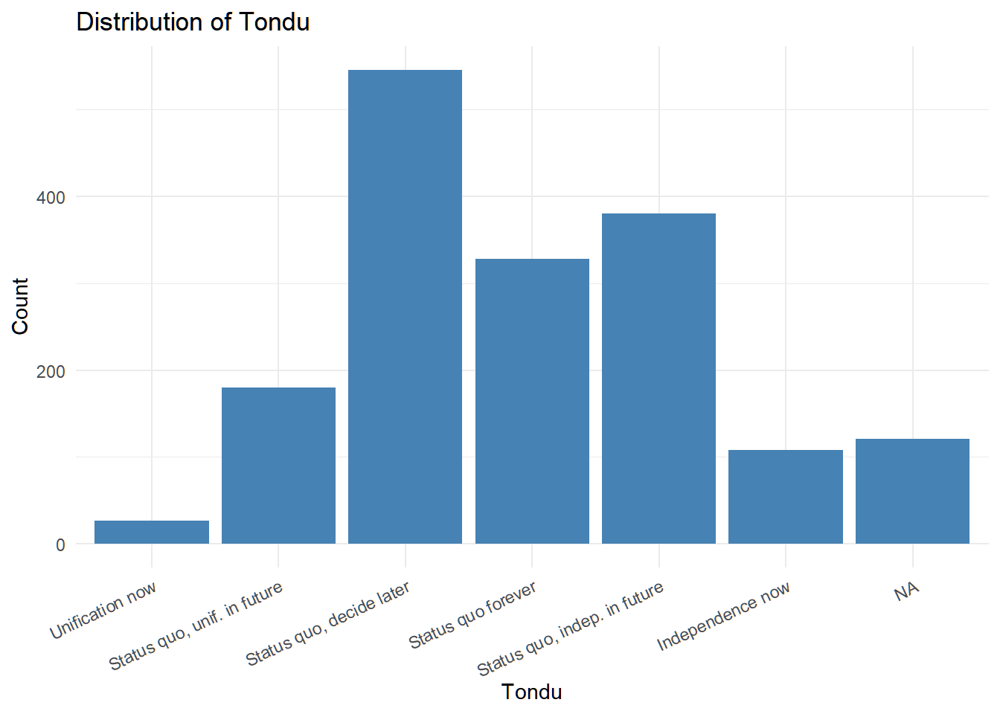
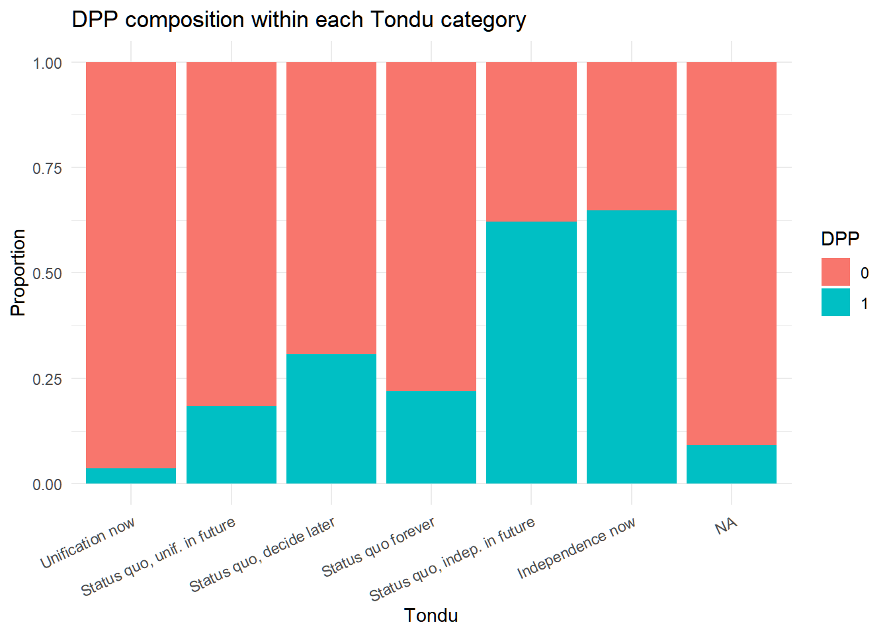
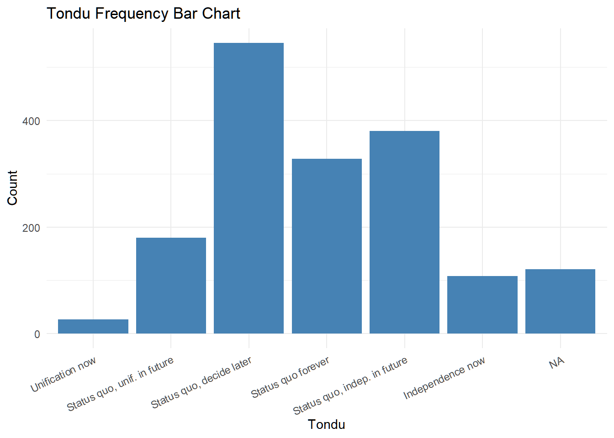

library(tidyverse)
library(haven)
library(janitor)
library(skimr)
TEDS_2016 <- read_dta(
"https://github.com/datageneration/home/blob/master/DataProgramming/data/TEDS_2016.dta?raw=true"
)Assignment 1
3. Exploratory Data Analysis with TEDS2016
glimpse(TEDS_2016)Rows: 1,690
Columns: 54
$ District <dbl+lbl> 201, 201, 201, 201, 201, 201, 201, 201, 201, 201, …
$ Sex <dbl+lbl> 2, 2, 1, 1, 2, 2, 1, 2, 2, 1, 1, 2, 2, 2, 2, 2, 2,…
$ Age <dbl+lbl> 4, 2, 5, 4, 5, 5, 5, 4, 5, 4, 5, 1, 5, 3, 4, 5, 4,…
$ Edu <dbl+lbl> 4, 5, 5, 2, 1, 2, 1, 5, 1, 1, 1, 2, 1, 5, 5, 1, 3,…
$ Arear <dbl+lbl> 1, 1, 1, 1, 1, 1, 1, 1, 1, 1, 1, 1, 1, 1, 1, 1, 1,…
$ Career <dbl+lbl> 1, 2, 1, 4, 3, 2, 4, 1, 4, 3, 3, 5, 5, 4, 1, 5, 2,…
$ Career8 <dbl+lbl> 1, 3, 1, 4, 5, 7, 4, 2, 4, 5, 5, 7, 7, 7, 2, 7, 3,…
$ Ethnic <dbl+lbl> 1, 2, 2, 1, 9, 1, 2, 1, 1, 2, 1, 1, 2, 1, 2, 9, 2,…
$ Party <dbl+lbl> 25, 25, 3, 25, 25, 6, 25, 24, 25, 25, 6, 5, 25…
$ PartyID <dbl+lbl> 9, 9, 1, 9, 9, 2, 9, 6, 9, 9, 2, 2, 9, 1, 1, 9, 9,…
$ Tondu <dbl+lbl> 3, 5, 3, 5, 9, 4, 9, 6, 9, 9, 5, 5, 9, 5, 4, 9, 9,…
$ Tondu3 <dbl+lbl> 2, 3, 2, 3, 9, 2, 9, 3, 9, 9, 3, 3, 9, 3, 2, 9, 9,…
$ nI2 <dbl+lbl> 3, 98, 98, 3, 98, 98, 98, 3, 98, 1, 2, 98, 98…
$ votetsai <dbl> NA, 1, 0, NA, NA, 1, 1, 1, 1, NA, 1, 1, NA, 0, 0, 1, N…
$ green <dbl> 0, 0, 0, 0, 0, 1, 0, 1, 0, 0, 1, 1, 0, 0, 0, 0, 0, 0, …
$ votetsai_nm <dbl> NA, 1, 0, NA, NA, 1, 1, 1, 1, NA, 1, 1, NA, 0, 0, 1, N…
$ votetsai_all <dbl> 0, 1, 0, 0, 0, 1, 1, 1, 1, NA, 1, 1, 0, 0, 0, 1, 0, 0,…
$ Independence <dbl> 0, 1, 0, 1, 0, 0, 0, 1, 0, 0, 1, 1, 0, 1, 0, 0, 0, 0, …
$ Unification <dbl> 0, 0, 0, 0, 0, 0, 0, 0, 0, 0, 0, 0, 0, 0, 0, 0, 0, 0, …
$ sq <dbl> 1, 0, 1, 0, 0, 1, 0, 0, 0, 0, 0, 0, 0, 0, 1, 0, 0, 1, …
$ Taiwanese <dbl> 1, 0, 0, 1, 0, 1, 0, 1, 1, 0, 1, 1, 0, 1, 0, 0, 0, 0, …
$ edu <dbl> 4, 5, 5, 2, 1, 2, 1, 5, 1, 1, 1, 2, 1, 5, 5, 1, 3, 4, …
$ female <dbl> 1, 1, 0, 0, 1, 1, 0, 1, 1, 0, 0, 1, 1, 1, 1, 1, 1, 0, …
$ whitecollar <dbl> 1, 1, 1, 0, 0, 1, 0, 1, 0, 0, 0, 0, 0, 0, 1, 0, 1, 1, …
$ lowincome <dbl> 4, 4, 5, 4, 3, 5, 2, 5, 5, 5, 2, 5, 3, 3, 4, 4, 5, 4, …
$ income <dbl> 8.0, 7.0, 8.0, 5.0, 5.5, 9.0, 1.0, 10.0, 2.0, 5.5, 3.0…
$ income_nm <dbl> 8, 7, 8, 5, NA, 9, 1, 10, 2, NA, 3, NA, NA, 9, 1, NA, …
$ age <dbl> 59, 39, 63, 55, 76, 64, 75, 54, 64, 59, 66, 25, 92, 41…
$ KMT <dbl> 0, 0, 1, 0, 0, 0, 0, 0, 0, 0, 0, 0, 0, 1, 1, 0, 0, 0, …
$ DPP <dbl> 0, 0, 0, 0, 0, 1, 0, 0, 0, 0, 1, 1, 0, 0, 0, 0, 0, 0, …
$ npp <dbl> 0, 0, 0, 0, 0, 0, 0, 1, 0, 0, 0, 0, 0, 0, 0, 0, 0, 0, …
$ noparty <dbl> 1, 1, 0, 1, 1, 0, 1, 0, 1, 1, 0, 0, 1, 0, 0, 1, 1, 1, …
$ pfp <dbl> 0, 0, 0, 0, 0, 0, 0, 0, 0, 0, 0, 0, 0, 0, 0, 0, 0, 0, …
$ South <dbl> 0, 0, 0, 0, 0, 0, 0, 0, 0, 0, 0, 0, 0, 0, 0, 0, 0, 0, …
$ north <dbl> 1, 1, 1, 1, 1, 1, 1, 1, 1, 1, 1, 1, 1, 1, 1, 1, 1, 1, …
$ Minnan_father <dbl> 1, 1, 1, 1, 1, 1, 1, 1, 1, 1, 1, 1, 0, 0, 1, 1, 0, 1, …
$ Mainland_father <dbl> 0, 0, 0, 0, 0, 0, 0, 0, 0, 0, 0, 0, 1, 1, 0, 0, 0, 0, …
$ Econ_worse <dbl> 0, 0, 1, 1, 0, 1, 1, 1, 1, 1, 1, 0, 0, 0, 1, 0, 1, 0, …
$ Inequality <dbl> 1, 1, 1, 1, 0, 1, 0, 1, 1, 1, 1, 1, 0, 1, 0, 1, 1, 1, …
$ inequality5 <dbl> 4, 5, 5, 5, 3, 5, 3, 5, 5, 5, 5, 5, 3, 4, 3, 5, 5, 5, …
$ econworse5 <dbl> 3, 3, 4, 5, 3, 4, 4, 5, 5, 5, 5, 3, 3, 3, 4, 3, 4, 3, …
$ Govt_for_public <dbl> 1, 1, 1, 0, 0, 0, 0, 0, 0, 0, 0, 0, 0, 1, 0, 1, 0, 0, …
$ pubwelf5 <dbl> 5, 5, 4, 1, 3, 2, 2, 1, 3, 2, 1, 2, 3, 4, 2, 5, 2, 2, …
$ Govt_dont_care <dbl> 0, 0, 1, 1, 0, 1, 1, 1, 0, 1, 0, 0, 0, 0, 0, 1, 0, 0, …
$ highincome <dbl> 1, 1, 1, 1, NA, 1, 0, 1, 0, NA, 0, NA, NA, 1, 0, NA, N…
$ votekmt <dbl> 0, 0, 1, 0, 0, 0, 0, 0, 0, 0, 0, 0, 0, 0, 1, 0, 0, 0, …
$ votekmt_nm <dbl> NA, 0, 1, NA, NA, 0, 0, 0, 0, NA, 0, 0, NA, 0, 1, 0, N…
$ Blue <dbl> 0, 0, 0, 0, 0, 0, 0, 0, 0, 0, 0, 0, 0, 0, 0, 0, 0, 0, …
$ Green <dbl> 0, 0, 0, 0, 0, 0, 0, 0, 0, 0, 0, 0, 0, 0, 0, 0, 0, 0, …
$ No_Party <dbl> 0, 0, 0, 0, 0, 0, 0, 0, 0, 0, 0, 0, 0, 0, 0, 0, 0, 0, …
$ voteblue <dbl> 0, 0, 1, 0, 0, 0, 0, 0, 0, 0, 0, 0, 0, 1, 1, 0, 0, 0, …
$ voteblue_nm <dbl> NA, 0, 1, NA, NA, 0, 0, 0, 0, NA, 0, 0, NA, 1, 1, 0, N…
$ votedpp_1 <dbl> NA, 1, 0, NA, NA, 1, 1, 1, 1, 0, 1, 1, NA, 0, 0, 1, NA…
$ votekmt_1 <dbl> NA, 0, 1, NA, NA, 0, 0, 0, 0, 0, 0, 0, NA, 0, 1, 0, NA…skim(TEDS_2016)| Name | TEDS_2016 |
| Number of rows | 1690 |
| Number of columns | 54 |
| _______________________ | |
| Column type frequency: | |
| numeric | 54 |
| ________________________ | |
| Group variables | None |
Variable type: numeric
| skim_variable | n_missing | complete_rate | mean | sd | p0 | p25 | p50 | p75 | p100 | hist |
|---|---|---|---|---|---|---|---|---|---|---|
| District | 0 | 1.00 | 4660.58 | 2652.46 | 201 | 1401 | 6406.0 | 6604 | 6806 | ▃▁▁▁▇ |
| Sex | 0 | 1.00 | 1.49 | 0.50 | 1 | 1 | 1.0 | 2 | 2 | ▇▁▁▁▇ |
| Age | 0 | 1.00 | 3.30 | 1.44 | 1 | 2 | 3.0 | 5 | 5 | ▅▅▅▆▇ |
| Edu | 0 | 1.00 | 3.33 | 1.55 | 1 | 2 | 3.0 | 5 | 9 | ▆▇▇▁▁ |
| Arear | 0 | 1.00 | 2.74 | 1.56 | 1 | 1 | 3.0 | 4 | 6 | ▇▃▃▂▁ |
| Career | 0 | 1.00 | 2.68 | 1.43 | 1 | 1 | 2.0 | 4 | 5 | ▇▆▂▇▃ |
| Career8 | 0 | 1.00 | 3.81 | 1.98 | 1 | 2 | 4.0 | 5 | 8 | ▇▅▇▁▅ |
| Ethnic | 0 | 1.00 | 1.66 | 1.50 | 1 | 1 | 1.0 | 2 | 9 | ▇▁▁▁▁ |
| Party | 0 | 1.00 | 13.02 | 9.93 | 1 | 5 | 7.0 | 25 | 26 | ▇▂▁▁▇ |
| PartyID | 0 | 1.00 | 4.52 | 3.55 | 1 | 2 | 2.0 | 9 | 9 | ▇▁▁▁▅ |
| Tondu | 0 | 1.00 | 4.13 | 1.77 | 1 | 3 | 4.0 | 5 | 9 | ▂▇▃▁▁ |
| Tondu3 | 0 | 1.00 | 2.67 | 1.86 | 1 | 2 | 2.0 | 3 | 9 | ▇▃▁▁▁ |
| nI2 | 0 | 1.00 | 35.13 | 45.76 | 1 | 1 | 3.0 | 98 | 98 | ▇▁▁▁▅ |
| votetsai | 429 | 0.75 | 0.63 | 0.48 | 0 | 0 | 1.0 | 1 | 1 | ▅▁▁▁▇ |
| green | 0 | 1.00 | 0.38 | 0.49 | 0 | 0 | 0.0 | 1 | 1 | ▇▁▁▁▅ |
| votetsai_nm | 429 | 0.75 | 0.63 | 0.48 | 0 | 0 | 1.0 | 1 | 1 | ▅▁▁▁▇ |
| votetsai_all | 248 | 0.85 | 0.55 | 0.50 | 0 | 0 | 1.0 | 1 | 1 | ▆▁▁▁▇ |
| Independence | 0 | 1.00 | 0.29 | 0.45 | 0 | 0 | 0.0 | 1 | 1 | ▇▁▁▁▃ |
| Unification | 0 | 1.00 | 0.12 | 0.33 | 0 | 0 | 0.0 | 0 | 1 | ▇▁▁▁▁ |
| sq | 0 | 1.00 | 0.52 | 0.50 | 0 | 0 | 1.0 | 1 | 1 | ▇▁▁▁▇ |
| Taiwanese | 0 | 1.00 | 0.63 | 0.48 | 0 | 0 | 1.0 | 1 | 1 | ▅▁▁▁▇ |
| edu | 10 | 0.99 | 3.30 | 1.49 | 1 | 2 | 3.0 | 5 | 5 | ▅▂▆▂▇ |
| female | 0 | 1.00 | 0.49 | 0.50 | 0 | 0 | 0.0 | 1 | 1 | ▇▁▁▁▇ |
| whitecollar | 0 | 1.00 | 0.54 | 0.50 | 0 | 0 | 1.0 | 1 | 1 | ▇▁▁▁▇ |
| lowincome | 0 | 1.00 | 4.34 | 0.82 | 1 | 4 | 5.0 | 5 | 5 | ▁▁▁▆▇ |
| income | 0 | 1.00 | 5.32 | 2.74 | 1 | 3 | 5.5 | 7 | 10 | ▅▃▇▃▃ |
| income_nm | 330 | 0.80 | 5.28 | 3.05 | 1 | 2 | 5.0 | 8 | 10 | ▇▅▆▆▆ |
| age | 0 | 1.00 | 49.11 | 16.81 | 20 | 35 | 49.0 | 61 | 100 | ▇▇▇▃▁ |
| KMT | 0 | 1.00 | 0.23 | 0.42 | 0 | 0 | 0.0 | 0 | 1 | ▇▁▁▁▂ |
| DPP | 0 | 1.00 | 0.35 | 0.48 | 0 | 0 | 0.0 | 1 | 1 | ▇▁▁▁▅ |
| npp | 0 | 1.00 | 0.03 | 0.16 | 0 | 0 | 0.0 | 0 | 1 | ▇▁▁▁▁ |
| noparty | 0 | 1.00 | 0.37 | 0.48 | 0 | 0 | 0.0 | 1 | 1 | ▇▁▁▁▅ |
| pfp | 0 | 1.00 | 0.02 | 0.14 | 0 | 0 | 0.0 | 0 | 1 | ▇▁▁▁▁ |
| South | 0 | 1.00 | 0.49 | 0.50 | 0 | 0 | 0.0 | 1 | 1 | ▇▁▁▁▇ |
| north | 0 | 1.00 | 0.48 | 0.50 | 0 | 0 | 0.0 | 1 | 1 | ▇▁▁▁▇ |
| Minnan_father | 0 | 1.00 | 0.72 | 0.45 | 0 | 0 | 1.0 | 1 | 1 | ▃▁▁▁▇ |
| Mainland_father | 0 | 1.00 | 0.10 | 0.30 | 0 | 0 | 0.0 | 0 | 1 | ▇▁▁▁▁ |
| Econ_worse | 0 | 1.00 | 0.55 | 0.50 | 0 | 0 | 1.0 | 1 | 1 | ▆▁▁▁▇ |
| Inequality | 0 | 1.00 | 0.94 | 0.25 | 0 | 1 | 1.0 | 1 | 1 | ▁▁▁▁▇ |
| inequality5 | 0 | 1.00 | 4.49 | 0.73 | 1 | 4 | 5.0 | 5 | 5 | ▁▁▁▅▇ |
| econworse5 | 0 | 1.00 | 3.64 | 0.78 | 1 | 3 | 4.0 | 4 | 5 | ▁▁▇▇▂ |
| Govt_for_public | 0 | 1.00 | 0.42 | 0.49 | 0 | 0 | 0.0 | 1 | 1 | ▇▁▁▁▆ |
| pubwelf5 | 0 | 1.00 | 2.88 | 1.17 | 1 | 2 | 3.0 | 4 | 5 | ▂▇▂▇▁ |
| Govt_dont_care | 0 | 1.00 | 0.50 | 0.50 | 0 | 0 | 0.0 | 1 | 1 | ▇▁▁▁▇ |
| highincome | 330 | 0.80 | 0.58 | 0.49 | 0 | 0 | 1.0 | 1 | 1 | ▆▁▁▁▇ |
| votekmt | 0 | 1.00 | 0.21 | 0.40 | 0 | 0 | 0.0 | 0 | 1 | ▇▁▁▁▂ |
| votekmt_nm | 429 | 0.75 | 0.28 | 0.45 | 0 | 0 | 0.0 | 1 | 1 | ▇▁▁▁▃ |
| Blue | 0 | 1.00 | 0.00 | 0.00 | 0 | 0 | 0.0 | 0 | 0 | ▁▁▇▁▁ |
| Green | 0 | 1.00 | 0.00 | 0.00 | 0 | 0 | 0.0 | 0 | 0 | ▁▁▇▁▁ |
| No_Party | 0 | 1.00 | 0.00 | 0.00 | 0 | 0 | 0.0 | 0 | 0 | ▁▁▇▁▁ |
| voteblue | 0 | 1.00 | 0.28 | 0.45 | 0 | 0 | 0.0 | 1 | 1 | ▇▁▁▁▃ |
| voteblue_nm | 429 | 0.75 | 0.37 | 0.48 | 0 | 0 | 0.0 | 1 | 1 | ▇▁▁▁▅ |
| votedpp_1 | 187 | 0.89 | 0.53 | 0.50 | 0 | 0 | 1.0 | 1 | 1 | ▇▁▁▁▇ |
| votekmt_1 | 187 | 0.89 | 0.23 | 0.42 | 0 | 0 | 0.0 | 0 | 1 | ▇▁▁▁▂ |
The initial EDA inspects variable structure, data types, and missingness patterns before modeling.
4. Problems encountered when working with the dataset
# Check candidate variables used in this assignment
vars_needed <- c(
"Tondu", "female", "DPP", "age", "income", "edu", "Taiwanese", "Econ_worse", "votetsai"
)
intersect(vars_needed, names(TEDS_2016))[1] "Tondu" "female" "DPP" "age" "income"
[6] "edu" "Taiwanese" "Econ_worse" "votetsai" setdiff(vars_needed, names(TEDS_2016))character(0)5. How to deal with missing values
# Convert haven-labelled vectors to plain vectors first
TEDS_clean <- TEDS_2016 |>
mutate(across(where(haven::is.labelled), haven::zap_labels))
recode_missing_codes <- function(x) {
if (!is.numeric(x)) return(x)
x |>
na_if(7) |>
na_if(8) |>
na_if(9) |>
na_if(97) |>
na_if(98) |>
na_if(99)
}
TEDS_clean <- TEDS_clean |>
mutate(across(everything(), recode_missing_codes))# Missing values in assignment variables
TEDS_clean |>
summarise(across(all_of(intersect(vars_needed, names(TEDS_clean))), ~ sum(is.na(.)))) |>
pivot_longer(everything(), names_to = "variable", values_to = "n_missing") |>
arrange(desc(n_missing))# A tibble: 9 × 2
variable n_missing
<chr> <int>
1 votetsai 429
2 income 362
3 Tondu 121
4 edu 10
5 female 0
6 DPP 0
7 age 0
8 Taiwanese 0
9 Econ_worse 0In this assignment, I handle missing values by putting known nonresponse codes to NA, then using drop_na() only on variables required by each specific model/table.
6. Relationship between Tondu and other variables
Prepare analysis data and assign labels
tondu_labels <- c(
"Unification now",
"Status quo, unif. in future",
"Status quo, decide later",
"Status quo forever",
"Status quo, indep. in future",
"Independence now",
"No response"
)
analysis_vars <- intersect(vars_needed, names(TEDS_clean))
df <- TEDS_clean |>
mutate(
Tondu = as.numeric(Tondu),
Tondu = factor(Tondu, levels = 1:7, labels = tondu_labels, ordered = TRUE),
female = as.factor(female),
DPP = as.factor(DPP),
Taiwanese = as.factor(Taiwanese),
Econ_worse = as.factor(Econ_worse)
) |>
select(all_of(analysis_vars))Frequency tables and descriptive checks
# Tondu by key categorical predictors
tabyl(df, Tondu) Tondu n percent valid_percent
Unification now 27 0.01597633 0.01720841
Status quo, unif. in future 180 0.10650888 0.11472275
Status quo, decide later 546 0.32307692 0.34799235
Status quo forever 328 0.19408284 0.20905035
Status quo, indep. in future 380 0.22485207 0.24219248
Independence now 108 0.06390533 0.06883365
No response 0 0.00000000 0.00000000
<NA> 121 0.07159763 NAif ("female" %in% names(df)) tabyl(df, Tondu, female) Tondu 0 1
Unification now 13 14
Status quo, unif. in future 118 62
Status quo, decide later 295 251
Status quo forever 151 177
Status quo, indep. in future 206 174
Independence now 54 54
No response 0 0
<NA> 31 90if ("DPP" %in% names(df)) tabyl(df, Tondu, DPP) Tondu 0 1
Unification now 26 1
Status quo, unif. in future 147 33
Status quo, decide later 378 168
Status quo forever 256 72
Status quo, indep. in future 144 236
Independence now 38 70
No response 0 0
<NA> 110 11if ("Taiwanese" %in% names(df)) tabyl(df, Tondu, Taiwanese) Tondu 0 1
Unification now 16 11
Status quo, unif. in future 132 48
Status quo, decide later 244 302
Status quo forever 136 192
Status quo, indep. in future 49 331
Independence now 4 104
No response 0 0
<NA> 49 72if ("Econ_worse" %in% names(df)) tabyl(df, Tondu, Econ_worse) Tondu 0 1
Unification now 14 13
Status quo, unif. in future 78 102
Status quo, decide later 239 307
Status quo forever 157 171
Status quo, indep. in future 155 225
Independence now 39 69
No response 0 0
<NA> 71 50# Example association test (if both variables exist)
if (all(c("Tondu", "DPP") %in% names(df))) {
chisq.test(table(df$Tondu, df$DPP))
}Warning in stats::chisq.test(x, y, ...): Chi-squared approximation may be
incorrect
Pearson's Chi-squared test
data: table(df$Tondu, df$DPP)
X-squared = NaN, df = 6, p-value = NAVisualization method
ggplot(df, aes(x = Tondu)) +
geom_bar(fill = "steelblue") +
labs(
title = "Distribution of Tondu",
x = "Tondu",
y = "Count"
) +
theme_minimal() +
theme(axis.text.x = element_text(angle = 25, hjust = 1))
# Stacked composition plot for DPP by Tondu (if available)
if (all(c("Tondu", "DPP") %in% names(df))) {
ggplot(df, aes(x = Tondu, fill = DPP)) +
geom_bar(position = "fill") +
labs(
title = "DPP composition within each Tondu category",
x = "Tondu",
y = "Proportion"
) +
theme_minimal() +
theme(axis.text.x = element_text(angle = 25, hjust = 1))
}
Modeling method for Tondu
Because Tondu is ordered, an ordinal logistic regression is appropriate.
model_vars <- c("Tondu", "female", "DPP", "age", "income", "edu", "Taiwanese", "Econ_worse")
model_vars <- intersect(model_vars, names(df))
df_tondu <- df |> drop_na(all_of(model_vars))
if (all(c("Tondu", "female", "DPP", "age", "income", "edu", "Taiwanese", "Econ_worse") %in% names(df_tondu))) {
m_tondu <- MASS::polr(
Tondu ~ female + DPP + age + income + edu + Taiwanese + Econ_worse,
data = df_tondu,
Hess = TRUE
)
summary(m_tondu)
}Call:
MASS::polr(formula = Tondu ~ female + DPP + age + income + edu +
Taiwanese + Econ_worse, data = df_tondu, Hess = TRUE)
Coefficients:
Value Std. Error t value
female1 0.141315 0.106364 1.3286
DPP1 0.973945 0.120514 8.0816
age -0.014693 0.004047 -3.6304
income -0.007236 0.020777 -0.3483
edu -0.014031 0.047396 -0.2960
Taiwanese1 1.249634 0.123017 10.1582
Econ_worse1 -0.162744 0.109111 -1.4916
Intercepts:
Value Std. Error t value
Unification now|Status quo, unif. in future -4.0587 0.4101 -9.8979
Status quo, unif. in future|Status quo, decide later -1.8391 0.3565 -5.1592
Status quo, decide later|Status quo forever 0.1834 0.3513 0.5222
Status quo forever|Status quo, indep. in future 1.2605 0.3546 3.5549
Status quo, indep. in future|Independence now 3.1332 0.3672 8.5323
Independence now|No response 18.9476 0.3672 51.5975
Residual Deviance: 3470.646
AIC: 3496.646 7. Next step: analyze votetsai
A binary logistic regression is suitable if votetsai is a yes/no vote indicator.
if ("votetsai" %in% names(df)) {
df_vote <- df |>
mutate(votetsai = as.factor(votetsai)) |>
drop_na(votetsai, Tondu)
# Crosstab first
tabyl(df_vote, votetsai, Tondu)
# Model (adds controls if available)
vote_predictors <- c("Tondu", "female", "DPP", "age", "income", "edu", "Taiwanese", "Econ_worse")
vote_predictors <- intersect(vote_predictors, names(df_vote))
form <- as.formula(paste("votetsai ~", paste(vote_predictors, collapse = " + ")))
m_vote <- glm(form, data = df_vote |> drop_na(all_of(c("votetsai", vote_predictors))), family = binomial())
summary(m_vote)
}
Call:
glm(formula = form, family = binomial(), data = drop_na(df_vote,
all_of(c("votetsai", vote_predictors))))
Coefficients:
Estimate Std. Error z value Pr(>|z|)
(Intercept) -0.233595 0.686886 -0.340 0.73380
Tondu.L 0.921283 0.475061 1.939 0.05247 .
Tondu.Q 0.452534 0.419366 1.079 0.28055
Tondu.C -0.564464 0.344701 -1.638 0.10152
Tondu^4 -0.355267 0.270651 -1.313 0.18931
Tondu^5 -0.695935 0.209215 -3.326 0.00088 ***
female1 -0.436828 0.200455 -2.179 0.02932 *
DPP1 3.439187 0.308231 11.158 < 2e-16 ***
age -0.006278 0.008086 -0.776 0.43746
income -0.034563 0.038810 -0.891 0.37316
edu -0.155170 0.093620 -1.657 0.09743 .
Taiwanese1 1.292315 0.212408 6.084 1.17e-09 ***
Econ_worse1 0.409663 0.200149 2.047 0.04068 *
---
Signif. codes: 0 '***' 0.001 '**' 0.01 '*' 0.05 '.' 0.1 ' ' 1
(Dispersion parameter for binomial family taken to be 1)
Null deviance: 1203.99 on 904 degrees of freedom
Residual deviance: 666.43 on 892 degrees of freedom
AIC: 692.43
Number of Fisher Scoring iterations: 68. Frequency table and barchart of Tondu with labels
The provided sample line should use factor() for labels (not as.numeric(..., labels = ...)).
TEDS_2016 <- TEDS_2016 |>
mutate(
Tondu = as.numeric(Tondu),
Tondu = factor(Tondu, levels = 1:7, labels = tondu_labels)
)tabyl(TEDS_2016, Tondu) Tondu n percent valid_percent
Unification now 27 0.01597633 0.01720841
Status quo, unif. in future 180 0.10650888 0.11472275
Status quo, decide later 546 0.32307692 0.34799235
Status quo forever 328 0.19408284 0.20905035
Status quo, indep. in future 380 0.22485207 0.24219248
Independence now 108 0.06390533 0.06883365
No response 0 0.00000000 0.00000000
<NA> 121 0.07159763 NAggplot(TEDS_2016, aes(x = Tondu)) +
geom_bar(fill = "steelblue") +
labs(
title = "Tondu Frequency Bar Chart",
x = "Tondu",
y = "Count"
) +
theme_minimal() +
theme(axis.text.x = element_text(angle = 25, hjust = 1))